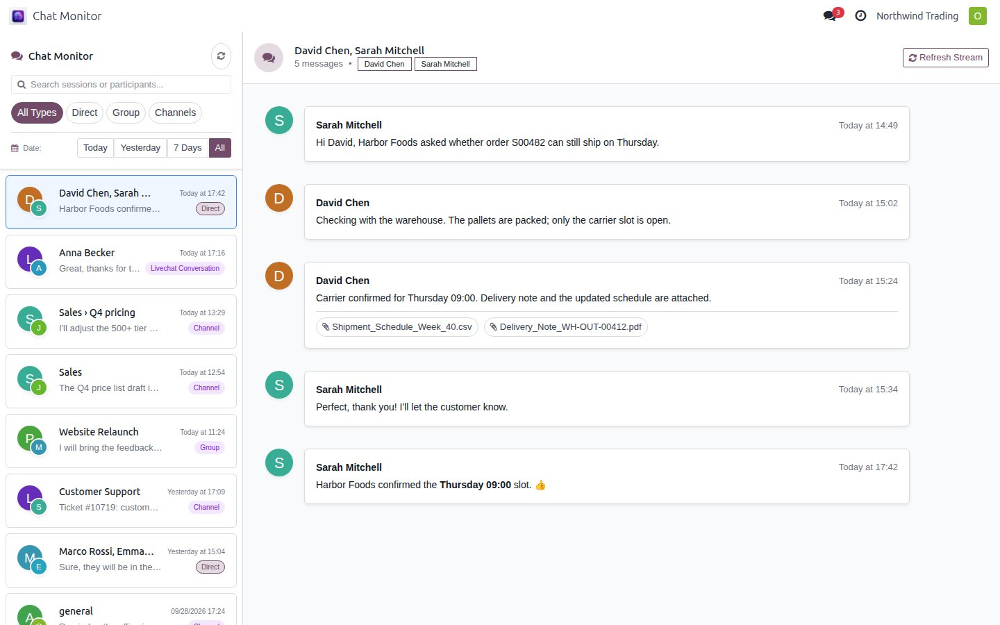
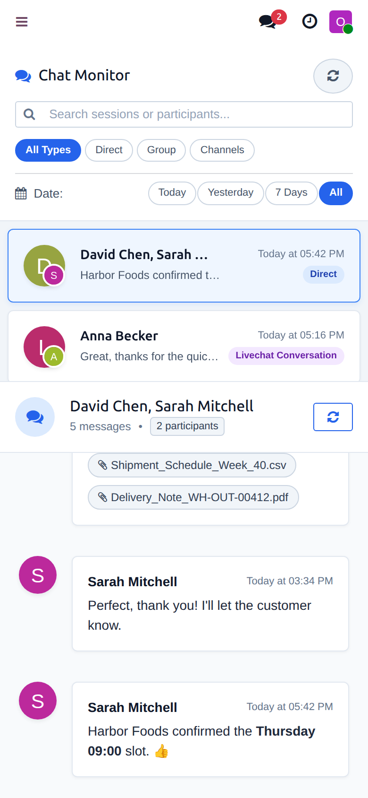
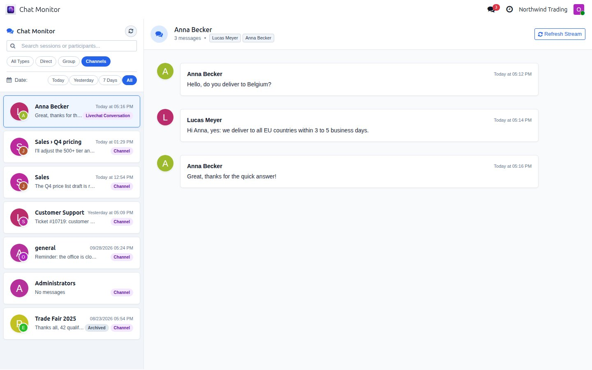
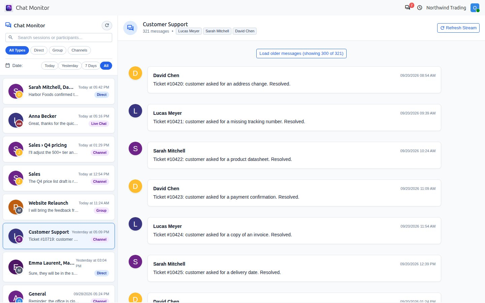
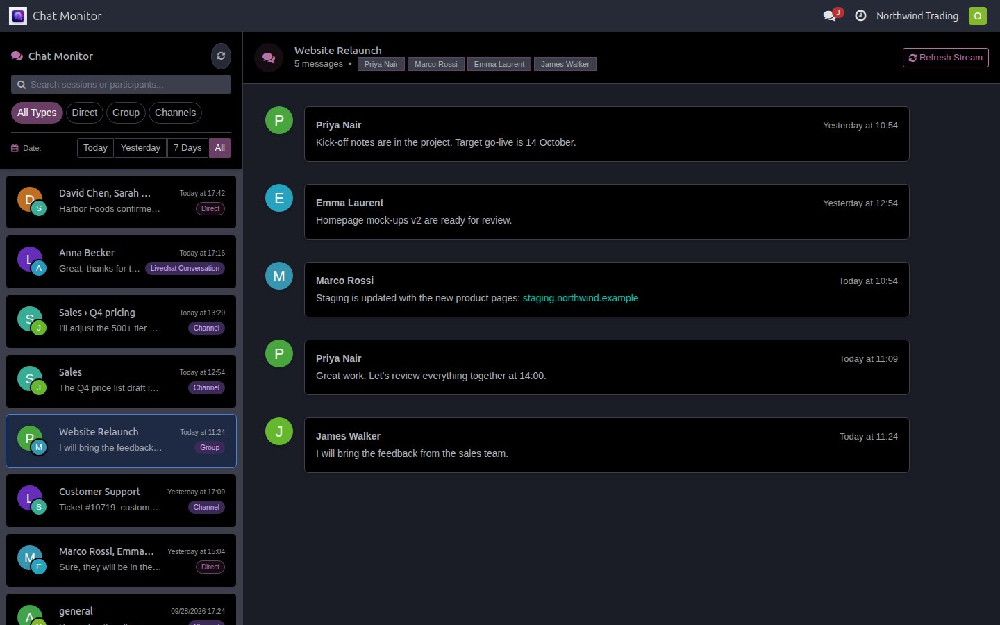
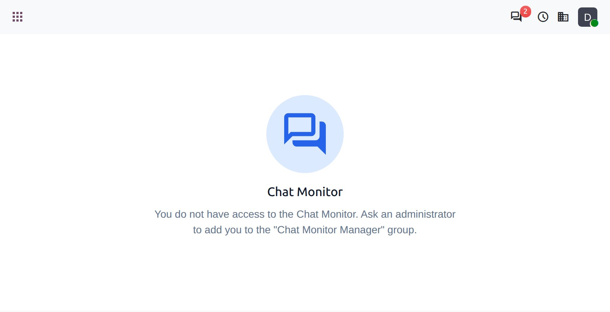

Discuss Chat Monitor · Odoo 19
Give managers and compliance officers a two-pane view of all Discuss activity — direct chats, group chats, channels, threads and Live Chat — with search, type and date filters, full transcripts and attachments. Nothing to configure, nothing leaves your server.


How it works
Chat Monitor is its own app in the Odoo menu, visible only to users in the Chat Monitor Manager group. It reads the messages Odoo already stores — it does not copy, forward or change them.
Every conversation, newest activity first, with participant avatars, the time of the last message, a one-line preview and a type badge.
All Types / Direct / Group / Channels, then Today, Yesterday, 7 Days or All — and search by conversation title, participant or visitor name.
The whole conversation on the right: authors, avatars, local times, formatted messages and the files that were shared.
The conversation list
Direct messages between two colleagues, private groups, public and restricted channels — all listed, whether or not the manager is a member.


The transcript
Messages keep their formatting and links. Each one shows its author, avatar and time; the header lists the participants.
Anywhere you work
On a phone the list sits above the open conversation and the header folds into one line. On Enterprise, the console follows Odoo's dark mode.

Access & privacy
Installing the app adds one group, Chat Monitor Manager. Members can read every Discuss conversation on the database, including private direct chats — that is the purpose of the app, and a responsibility: make sure monitoring is covered by your workplace policy and, where required, that staff have been informed.

Everything included
Direct chats, groups, channels and their threads, Live Chat and WhatsApp conversations — each with a clear badge.
Matches conversation titles, participants and visitors. It waits for a short pause in typing, and a slow answer never replaces a newer one.
Shown in the manager's timezone with the date and time format of their language, in the style of Discuss: “Today at 03:11 PM”, “Yesterday at 05:00 PM”, or the full date.
The list is built with a few grouped database queries, and long conversations load 300 messages at a time.
Every label and message of the console is translatable, and the translation template ships with the app.
One button reloads the conversation list, another reloads the open conversation; the view scrolls to the latest message automatically.
Compatibility
No third-party services, no subscriptions, no settings to fill in. The app uses only Odoo's own calls between your browser and your server.
| Version | 19.0.1.0.1 |
|---|---|
| Odoo | 19.0 — Community and Enterprise |
| Depends on | base, mail, web |
| Access | Chat Monitor Manager group; the administrator is added on install |
| Data | Reads existing messages; never changes Discuss data |
| Optional apps | Live Chat and WhatsApp (Enterprise) conversations are listed when those apps are installed |
| Devices | Desktop, tablet and phone browsers; dark mode on Enterprise |
| Licence | OPL-1 |
What the console will never do
The console has no message box and no edit or delete buttons. To take part in a conversation, use Discuss as usual.
Reading a conversation does not add the monitor to it, and nothing changes for the people chatting.
Everything stays in your Odoo database; no third-party service is ever contacted.
FAQ
The app shows no indicator inside Discuss. Informing staff is your organisation's responsibility under local employment and privacy law.
No. It covers Discuss conversations only: direct chats, groups, channels and their threads, plus Live Chat and WhatsApp conversations. Chatter on invoices, tasks and other records is out of scope.
Under All Types and Channels, each with its own badge. Website visitors are shown by the name they gave, with their own avatar.
Nothing changes for them: the Chat Monitor menu is hidden, and opening the console link shows a You do not have access screen instead of any data.
Yes. The list is built with a few grouped database queries, and a conversation opens on its latest 300 messages with a button to load older ones. Date filters keep long-running channels manageable.
Yes. All texts are translatable (a translation template is included), and dates and times follow the format of each user's language in Settings › Languages.
Nothing. The app uses only Odoo's own calls between your browser and your Odoo instance.
The console lists all Discuss conversations on the database regardless of company. Restrict the manager group accordingly if you need per-company monitors.
Support
We answer within one business day and ship fixes for confirmed bugs free of charge for 90 days after purchase.
Discuss Chat Monitor · © Albatross · Licence OPL-1